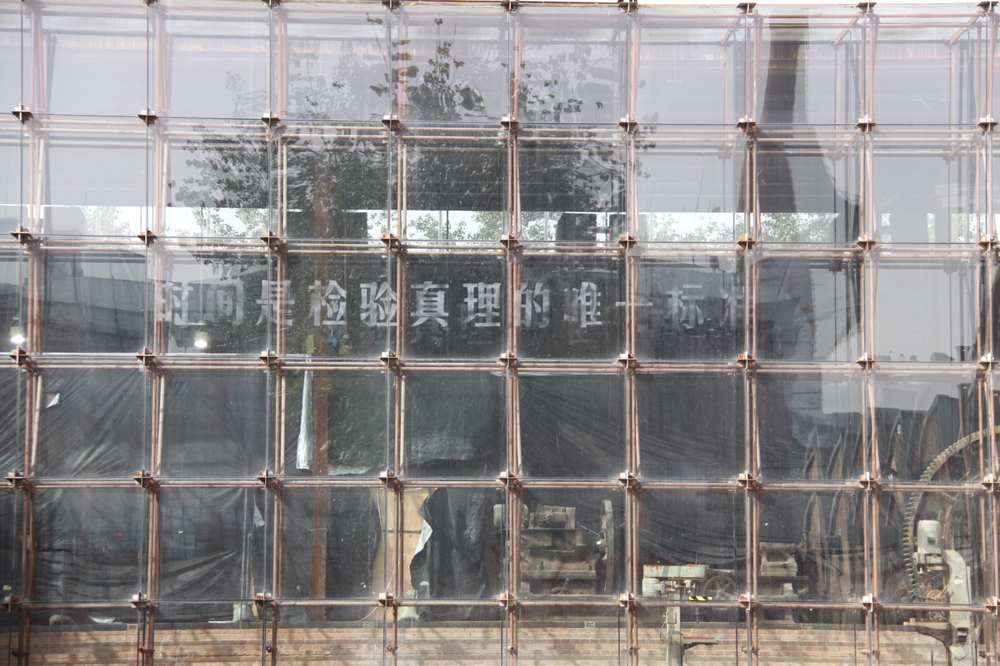
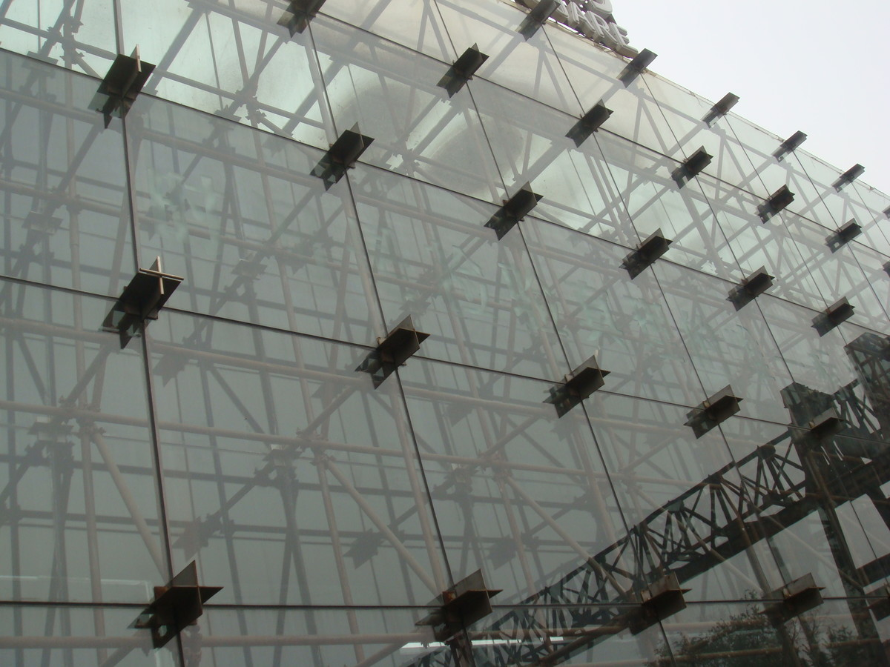
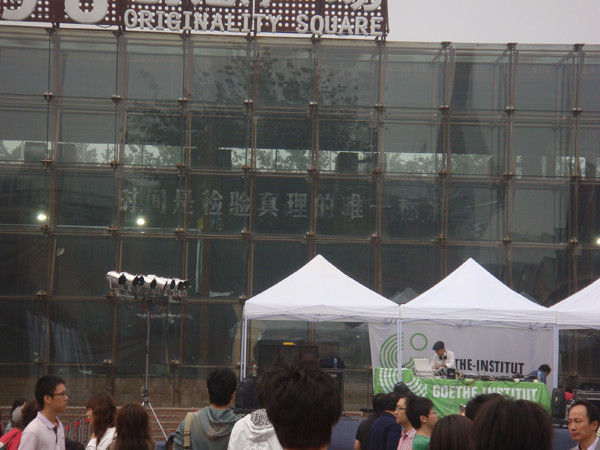

时间是检验真理的唯一标准 | TIME IS THE SOLE CRITERION FOR TESTING TRUTH

行为，透明胶水，灰尘，可变尺寸，2009
Action, Glue, Dust, Variable, 2009
用胶水在玻璃上写上“时间是检验真理的唯一标准”，随着时间推移，风沙会将这句话逐渐显示出来。
The sentence - “Time is the sole criterion for testing truth” - was written on the glass with glue. Over time, the sentence has gradually turned clearer as more and more dusts attached to the glue.

798艺术节，北京
798 Art Festival, Beijing

798艺术节，北京
798 Art Festival, Beijing